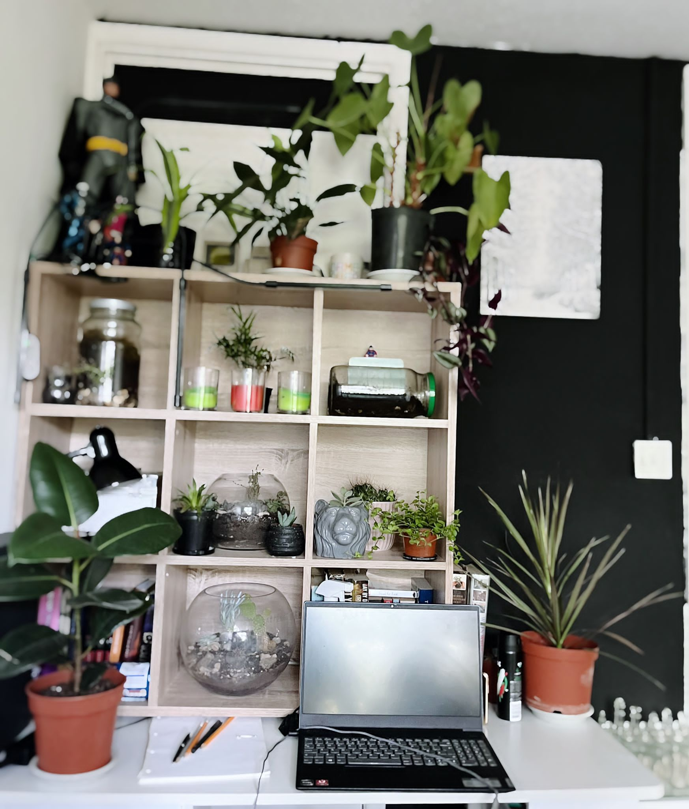

About me:
- Im 37 years old from Bristol.
- I've been working in the catering and hospitality sectors for more then 10 years.
- I've recently started Loving plants collecting more then 50 in 12 months.
- It's been a big learning curve in terms of differences in needs and care.

- I've only lost 2 in 12 months and they were both given to me in sorry states and probably already too late to save.
- As you can see in the picture above just like me they are loving life.
- please check out my instagram @smallscapesuk to see all of my plant beauty's.